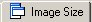
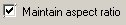
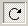
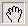
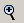
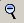
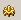
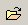

Now that you've made your fractal, you probably want to render it.
The first thing you'll want to do when setting up your fractal for rendering is determine exactly what size of picture you want to render. You'll then want the main window to show that size picture. This means we have to play with something called the aspect ratio.
If you don't know what an aspect ratio is, it's how wide an image is compared to how tall it is. In apophysis, we control the aspect ratio by setting the width and height of an image in pixels.
So let's do exactly that.
In the main window, on the top menu, click on the Adjust button . The adjust menu will show up.
Click on the Image Size tab  . The image size dialog will show up.
Set width and the height of your image using the width and height box.
The width and height are in pixels. I set mine to 800 by 600, but you can set yours to different values if you want.
If you notice that every time you change the width, your height changes too, this is because the maintain aspect ratio box  is checked. The maintain aspect ratio box makes sure that even if the size of the picture changes, the proportion of with to height doesn't change. If you want to change the height and width separately, uncheck the Maintain aspect ratio box.
The other thing on this dialog that you'll want to take a look at is the Resize Main Window box. If you check this box, it will make sure that the fractal image in your main window is resized to be exactly the same size the final render will be. Click Apply to see the new frame for you picture in the main window.
The big advantage of setting the aspect ratio in the image size tab is that when you resize the main window, the preview window will still show the right aspect ratio, so you will still have a good idea of what your final picture is going to look like.
So, now that we know how to frame our image, let's see if we can't get the wing to look a bit prettier inside that frame.
You may have noticed that while your wing is very pretty, it is also a bit vertical. To show it off properly, it really needs to be horizontal. There are two ways to do this
Go to the main window.
Across the top you will see a menu.
This menu does not have what you want. This is because your window is too small. Go to the lower right-hand corner of your window and use your mouse to drag this corner until the rest of the buttons appear across the top.
To rotate your wing, you need to select the rotate button 
In the fractal window of your main screen, click and drag with your mouse. A rectangle outlined by a dotted line will show where your wing is going to rotate to.
Let go of the mouse, and your fractal will show up rotated in a few seconds.
So what do you do if your wing looks a little off-center?
In the main window, go up to the top menu and click on the Translate Image button .
Then, in the main window, click and hold with the mouse and start dragging the image around until you have it where you want it, and let go of the mouse.
If you want to zoom in closer to your fractal, go to the main menu's top menu bar and click on the zoom to rectangle button 
The zoom to rectangle button zooms by having you draw a rectangle around the part you want to see and then matching the edges of the main window as closely as possible to that rectangle.
To use the zoom to rectangle button, click and hold in the main window where you want a corner of your selected rectangle to be, and then drag the mouse to draw the rectangle.
The main window will zoom in.
The top menu bar's rectangle zoom out button  works like the rectangle zoom in button, but in reverse. I'll leave that to you to play with.
I would like to point out that there are advantages and drawbacks to this method of zooming. You can use this method to zoom in as far as you want, but as you zoom in you'll notice that the image gets more noisy and less well-defined.
This is because, in order to make a fractal image show up quickly on your screen, the rectangle tool throws actual image quality out the window. And most of the time, you don't need a really high quality image to get an idea of what your fractal is going to look like. After you render the fractal, all that noise is going to go away anyway.
There are ways to get a more high-quality zoom, but you'll read about them in the next section.
There is another, more precise way to rotate your fractal, and that is by using the Camera tab of the adjust menu. In the main window on the top menu bar click on the adjust button .
It will bring up the adjust menu with the Camera tab already selected.
To rotate your wing, simply move the Rotation slider, or type in the exact degrees of rotation you want in the dialog beside the rotation slider.
You can move the fractal's position with the X position slider and the Y position slider in the camera tab of the adjust menu.
However, there is a trick to using these sliders. See, these sliders only work the way you think they would work if the rotation slider is set to zero degrees of rotation. This is because the X axis is horizontal and the Y axis is vertical when the rotation is 0.
If you move the X slider, the wing moves left or right, and if you move the Y slider, the wing moves up or down. Below is a picture of the fractal with everything set to zero, and with a blue X axis and a red Y axis drawn in. If you moved the sliders, those are the axises along which the fractal would move. If you move the x slider, the picture would move along the blue line. If you move the Y slider, the picture would move along the red line.
However, if you move the rotation slider, the X and Y axis rotates as well. That means that when you move the X slider, the fractal will still move along the X axis, but since the X axis is rotated as well, your fractal is probably going to move in a diagonal line across the screen. Below is the fractal rotated 30 degrees. If you move the X slider, the fractal will move along the blue diagonal line and if you move the Y slider, the fractal will move along the red diagonal line.
As a result, I find it easier to move the fractal with the translate image hand on the main screen.
In the camera tab of the adjust menu, you can also zoom in on the image using the zoom slider. It will zoom in to wherever the center of the picture is.
However, there are a couple of drawbacks to this method of zooming. The more zoom you use, the longer it takes for the main window to render your fractal. On a fast computer, it may take as much as five seconds. On a slow computer, you could be waiting several minutes for it to render the zoomed in fractal.
But wait (you might ask) why didn't you mention this problem when using the rectangle zoom tool on the main screen? Well, the rectangle zoom tool does not have this problem. Why not? Instead of answering, I'll show you a pair of pictures.
The above picture was done with Apophysis rectangle zoom
The above was done with the zoom slider on the camera tab of the adjust window.
Compare the two pictures. Notice how the one done with the Rectangle tool zoom is a lot grainier than the one done with the camera tab zoom. That is why the Rectangle tool zoom is a lot faster than the camera tab zoom- the rectangle tool sacrifices quality in order to get something up very very fast. The zoom slider, on the other hand, gives you a good, quality preview of the close-up, but because of the quality, displaying that closeup is painfully slow.
You should also note that there is a limit to how far you can zoom in with the zoom slider. You can only zoom in up to a certain, rather arbitrary limit. With the Rectangle zoom too, there is no limitation to how far you can zoom, except the practical limitation that the more you zoom in, the less there is to see because of the sacrifices made for fast rendering.
And now, all your hard work pays off, because we are now going to render the fractal! In the main window in the top menu bar, click on the Render button . The Render Window will come up.
The first thing you need to do is set the Destination, which is where your final rendered image will be saved.
Click on the file browser button.  The file browser window will open.
Browse around until you find a folder where you want to stash your images.Then give your picture a name in the file name field.
Now take a look at the Files of type dropdown menu. You can render your files as three different file types: a bitmap (.bmp) file, a PNG image (.png), or a jpg image (.jpg)
The different file types do different things. Perhaps the most important difference is the difference between the PNG format and the other two formats.
The PNG format lets parts of the fractal be transparent. Specifically, it lets you render the fractal on a transparent background, which is very useful when you are going to be using the image together with several other other images (i.e. compositing the images together.)
As you can see, the wing above lets the background show through.
By contrast, if you choose JPG for your encoding, the fractal will render on whatever color background you have set. I haven't told you yet how to set the background color, so for the moment you're probably rendering on the default black background.
And that leaves us with the bitmap format. Hardly anybody uses the BMP format, because the BMP format looks exactly like the .JPG format, and has more disadvantages. The disadvantage of using .BMP is that there is absolutely no compression on the image, so the file size is really really big, which makes it hard to store a lot of images.
Now we get to determine the size of the image. By default, Apophysis tries to render things at 1024 by 760, which is the standard default resolution for computer displays. If you want the size settings to match the settings you set in the image size tab of the Adjust menu, you need to change them.
Change the width to 800. If you have the maintain aspect ratio box checked, the height will automatically change to 600. If you want to change the height and weight separately, you'll need to uncheck the maintain aspect ratio box.
The larger you make the image size, the longer it will take to render, and the more memory you will need on your computer. The memory usage box keeps track of how much memory you will need for a particular size image, as well as for other setting's we'll get to in the next section.
If you make the image too big, however, you will run out of memory.
Which brings us to the Rendering options. There are three rendering options. Quality, Filter Radius, and Oversample.
As a general rule of thumb, the higher these values are, the more higher quality your fractal will be, and the more time it will take to render the fractal. A higher quality tends to make the fractal more smooth and less grainy, as does a higher oversample. I have no idea what the Filter Radius does, because it has not been adequately explained to me yet.
For rendering the wing, the default settings will do.